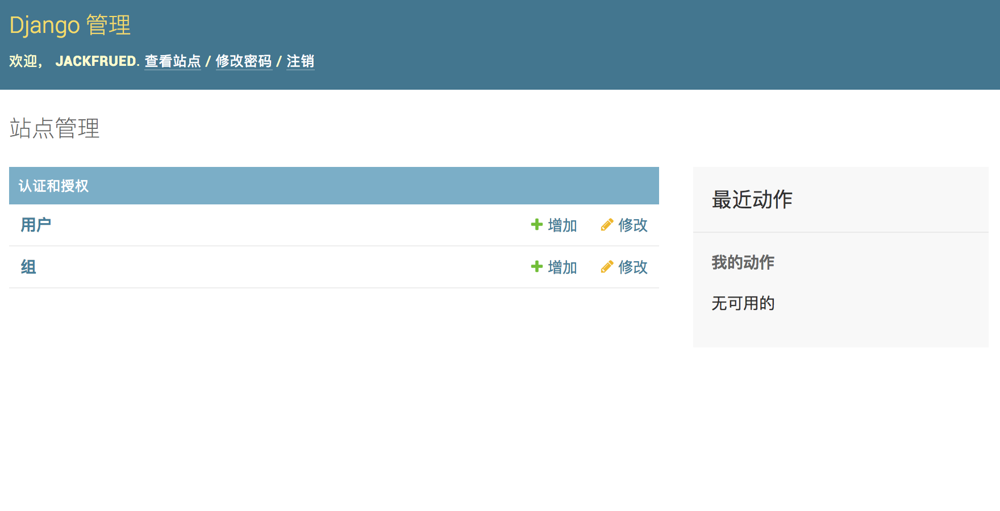
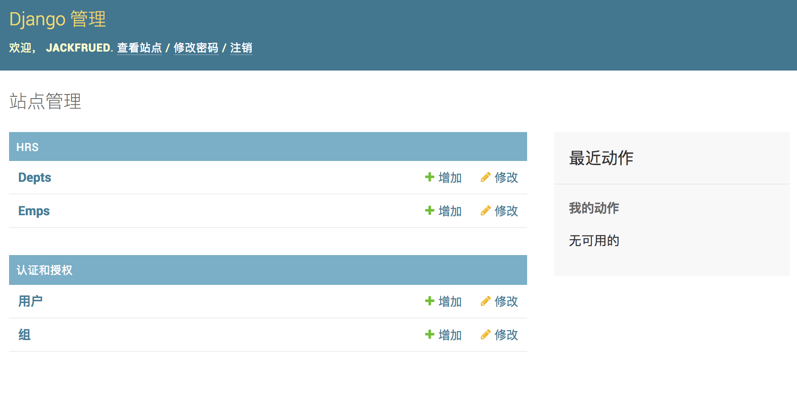
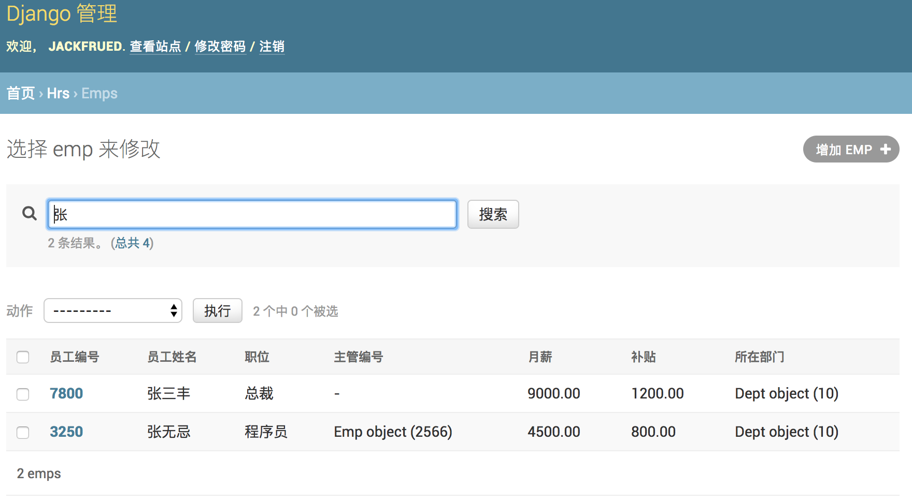

42.深入模型
深入模型
在上一个章节中，我们提到了Django是基于MVC架构的Web框架，MVC架构追求的是“模型”和“视图”的解耦合。所谓“模型”说得更直白一些就是数据，所以通常也被称作“数据模型”。在实际的项目中，数据模型通常通过数据库实现持久化操作，而关系型数据库在很长一段时间都是持久化的首选方案，下面我们以MySQL为例来说明如何使用关系型数据库来实现持久化操作。
配置关系型数据库MySQL
我们继续来完善上一个章节中的OA项目，首先从配置项目使用的数据库开始。
- 修改项目的settings.py文件，首先将我们之前创建的应用hrs添加已安装的项目中，然后配置MySQL作为持久化方案。
| (venv)$ cd oa/settings.py
|
| # 此处省略上面的代码
INSTALLED_APPS = [
'django.contrib.admin',
'django.contrib.auth',
'django.contrib.contenttypes',
'django.contrib.sessions',
'django.contrib.messages',
'django.contrib.staticfiles',
'hrs',
]
DATABASES = {
'default': {
'ENGINE': 'django.db.backends.mysql',
'NAME': 'oa',
'HOST': 'localhost',
'PORT': 3306,
'USER': 'root',
'PASSWORD': '123456',
}
}
# 此处省略下面的代码
|
在配置ENGINE属性时，常用的可选值包括：
'django.db.backends.sqlite3'：SQLite嵌入式数据库。'django.db.backends.postgresql'：BSD许可证下发行的开源关系型数据库产品。'django.db.backends.mysql'：转手多次目前属于甲骨文公司的经济高效的数据库产品。'django.db.backends.oracle'：甲骨文公司的关系型数据库旗舰产品。
其他的配置可以参考官方文档中数据库配置的部分。
NAME属性代表数据库的名称，如果使用SQLite它对应着一个文件，在这种情况下NAME的属性值应该是一个绝对路径；使用其他关系型数据库，则要配置对应的HOST（主机）、PORT（端口）、USER（用户名）、PASSWORD（口令）等属性。
- 安装MySQL客户端工具，Python 3中使用PyMySQL，Python 2中用MySQLdb。
| (venv)$ pip install pymysql
|
如果使用Python 3需要修改项目的__init__.py文件并加入如下所示的代码，这段代码的作用是将PyMySQL视为MySQLdb来使用，从而避免Django找不到连接MySQL的客户端工具而询问你：“Did you install mysqlclient? ”（你安装了mysqlclient吗？）。
| import pymysql
pymysql.install_as_MySQLdb()
|
- 运行manage.py并指定migrate参数实现数据库迁移，为应用程序创建对应的数据表，当然在此之前需要先启动MySQL数据库服务器并创建名为oa的数据库，在MySQL中创建数据库的语句如下所示。
| drop database if exists oa;
create database oa default charset utf8;
|
| (venv)$ cd ..
(venv)$ python manage.py migrate
Operations to perform:
Apply all migrations: admin, auth, contenttypes, sessions
Running migrations:
Applying contenttypes.0001_initial... OK
Applying auth.0001_initial... OK
Applying admin.0001_initial... OK
Applying admin.0002_logentry_remove_auto_add... OK
Applying contenttypes.0002_remove_content_type_name... OK
Applying auth.0002_alter_permission_name_max_length... OK
Applying auth.0003_alter_user_email_max_length... OK
Applying auth.0004_alter_user_username_opts... OK
Applying auth.0005_alter_user_last_login_null... OK
Applying auth.0006_require_contenttypes_0002... OK
Applying auth.0007_alter_validators_add_error_messages... OK
Applying auth.0008_alter_user_username_max_length... OK
Applying auth.0009_alter_user_last_name_max_length... OK
Applying sessions.0001_initial... OK
|
- 可以看到，Django帮助我们创建了10张表，这些都是使用Django框架需要的东西，稍后我们就会用到这些表。除此之外，我们还应该为我们自己的应用创建数据模型。如果要在hrs应用中实现对部门和员工的管理，我们可以创建如下所示的数据模型。
| (venv)$ vim hrs/models.py
|
| from django.db import models
class Dept(models.Model):
"""部门类"""
no = models.IntegerField(primary_key=True, db_column='dno', verbose_name='部门编号')
name = models.CharField(max_length=20, db_column='dname', verbose_name='部门名称')
location = models.CharField(max_length=10, db_column='dloc', verbose_name='部门所在地')
class Meta:
db_table = 'tb_dept'
class Emp(models.Model):
"""员工类"""
no = models.IntegerField(primary_key=True, db_column='eno', verbose_name='员工编号')
name = models.CharField(max_length=20, db_column='ename', verbose_name='员工姓名')
job = models.CharField(max_length=10, verbose_name='职位')
# 自参照完整性多对一外键关联
mgr = models.ForeignKey('self', on_delete=models.SET_NULL, null=True, blank=True, verbose_name='主管编号')
sal = models.DecimalField(max_digits=7, decimal_places=2, verbose_name='月薪')
comm = models.DecimalField(max_digits=7, decimal_places=2, null=True, blank=True, verbose_name='补贴')
# 多对一外键关联
dept = models.ForeignKey(Dept, db_column='dno', on_delete=models.PROTECT, verbose_name='所在部门')
class Meta:
db_table = 'tb_emp'
|
说明：上面定义模型时使用了字段类及其属性，其中IntegerField对应数据库中的integer类型，CharField对应数据库的varchar类型，DecimalField对应数据库的decimal类型，ForeignKey用来建立多对一外键关联。字段属性primary_key用于设置主键，max_length用来设置字段的最大长度，db_column用来设置数据库中与字段对应的列，verbose_name则设置了Django后台管理系统中该字段显示的名称。如果对这些东西感到很困惑也不要紧，文末提供了字段类、字段属性、元数据选项等设置的相关说明，不清楚的读者可以稍后查看对应的参考指南。
- 通过模型创建数据表。
| (venv)$ python manage.py makemigrations hrs
Migrations for 'hrs':
hrs/migrations/0001_initial.py
- Create model Dept
- Create model Emp
(venv)$ python manage.py migrate
Operations to perform:
Apply all migrations: admin, auth, contenttypes, hrs, sessions
Running migrations:
Applying hrs.0001_initial... OK
|
执行完数据模型迁移操作之后，可以在通过图形化的MySQL客户端工具查看到E-R图（实体关系图）。

在后台管理模型
- 创建超级管理员账号。
| (venv)$ python manage.py createsuperuser
Username (leave blank to use 'hao'): jackfrued
Email address: jackfrued@126.com
Password:
Password (again):
Superuser created successfully.
|
- 启动Web服务器，登录后台管理系统。
| (venv)$ python manage.py runserver
|
访问http://127.0.0.1:8000/admin，会来到如下图所示的登录界面。

登录后进入管理员操作平台。

至此我们还没有看到之前创建的模型类，需要在应用的admin.py文件中模型进行注册。
- 注册模型类。
| from django.contrib import admin
from hrs.models import Emp, Dept
admin.site.register(Dept)
admin.site.register(Emp)
|
注册模型类后，就可以在后台管理系统中看到它们。

- 对模型进行CRUD操作。
可以在管理员平台对模型进行C（新增）R（查看）U（更新）D（删除）操作，如下图所示。
添加新的部门。

查看所有部门。

更新和删除部门。

- 注册模型管理类。
再次修改admin.py文件，通过注册模型管理类，可以在后台管理系统中更好的管理模型。
| from django.contrib import admin
from hrs.models import Emp, Dept
class DeptAdmin(admin.ModelAdmin):
list_display = ('no', 'name', 'location')
ordering = ('no', )
class EmpAdmin(admin.ModelAdmin):
list_display = ('no', 'name', 'job', 'mgr', 'sal', 'comm', 'dept')
search_fields = ('name', 'job')
admin.site.register(Dept, DeptAdmin)
admin.site.register(Emp, EmpAdmin)
|


为了更好的查看模型数据，可以为Dept和Emp两个模型类添加__str__魔法方法。
| from django.db import models
class Dept(models.Model):
"""部门类"""
# 此处省略上面的代码
def __str__(self):
return self.name
# 此处省略下面的代码
class Emp(models.Model):
"""员工类"""
# 此处省略上面的代码
mgr = models.ForeignKey('self', on_delete=models.SET_NULL, null=True, blank=True, verbose_name='直接主管')
# 此处省略下面的代码
# 此处省略上面的代码
def __str__(self):
return self.name
# 此处省略下面的代码
|
修改代码后刷新查看Emp模型的页面，效果如下图所示。

使用ORM完成模型的CRUD操作
在了解了Django提供的模型管理平台之后，我们来看看如何从代码层面完成对模型的CRUD（Create / Read / Update / Delete）操作。我们可以通过manage.py开启Shell交互式环境，然后使用Django内置的ORM框架对模型进行CRUD操作。
| (venv)$ python manage.py shell
Python 3.6.4 (v3.6.4:d48ecebad5, Dec 18 2017, 21:07:28)
[GCC 4.2.1 (Apple Inc. build 5666) (dot 3)] on darwin
Type "help", "copyright", "credits" or "license" for more information.
(InteractiveConsole)
>>>
|
新增
| >>> from hrs.models import Dept, Emp
>>> dept = Dept(40, '研发2部', '深圳')
>>> dept.save()
|
更新
| >>> dept.name = '研发3部'
>>> dept.save()
|
查询
查询所有对象。
| >>> Dept.objects.all()
<QuerySet [<Dept: 研发1部>, <Dept: 销售1部>, <Dept: 运维1部>, <Dept: 研发3部>]>
|
过滤数据。
| >>> Dept.objects.filter(name='研发3部') # 查询部门名称为“研发3部”的部门
<QuerySet [<Dept: 研发3部>]>
>>>
>>> Dept.objects.filter(name__contains='研发') # 查询部门名称包含“研发”的部门(模糊查询)
<QuerySet [<Dept: 研发1部>, <Dept: 研发3部>]>
>>>
>>> Dept.objects.filter(no__gt=10).filter(no__lt=40) # 查询部门编号大于10小于40的部门
<QuerySet [<Dept: 销售1部>, <Dept: 运维1部>]>
>>>
>>> Dept.objects.filter(no__range=(10, 30)) # 查询部门编号在10到30之间的部门
<QuerySet [<Dept: 研发1部>, <Dept: 销售1部>, <Dept: 运维1部>]>
|
查询单个对象。
| >>> Dept.objects.get(pk=10)
<Dept: 研发1部>
>>>
>>> Dept.objects.get(no=20)
<Dept: 销售1部>
>>>
>>> Dept.objects.get(no__exact=30)
<Dept: 运维1部>
>>>
>>> Dept.objects.filter(no=10).first()
<Dept: 研发1部>
|
排序数据。
| >>> Dept.objects.order_by('no') # 查询所有部门按部门编号升序排列
<QuerySet [<Dept: 研发1部>, <Dept: 销售1部>, <Dept: 运维1部>, <Dept: 研发3部>]>
>>>
>>> Dept.objects.order_by('-no') # 查询所有部门按部门编号降序排列
<QuerySet [<Dept: 研发3部>, <Dept: 运维1部>, <Dept: 销售1部>, <Dept: 研发1部>]>
|
切片数据。
| >>> Dept.objects.order_by('no')[0:2] # 按部门编号排序查询1~2部门
<QuerySet [<Dept: 研发1部>, <Dept: 销售1部>]>
>>>
>>> Dept.objects.order_by('no')[2:4] # 按部门编号排序查询3~4部门
<QuerySet [<Dept: 运维1部>, <Dept: 研发3部>]>
|
高级查询。
| >>> Emp.objects.filter(dept__no=10) # 根据部门编号查询该部门的员工
<QuerySet [<Emp: 乔峰>, <Emp: 张无忌>, <Emp: 张三丰>]>
>>>
>>> Emp.objects.filter(dept__name__contains='销售') # 查询名字包含“销售”的部门的员工
<QuerySet [<Emp: 黄蓉>]>
>>>
>>> Dept.objects.get(pk=10).emp_set.all() # 通过部门反查部门所有的员工
<QuerySet [<Emp: 乔峰>, <Emp: 张无忌>, <Emp: 张三丰>]>
|
说明1：由于员工与部门之间存在多对一外键关联，所以也能通过部门反向查询该部门的员工（从一对多关系中“一”的一方查询“多”的一方），反向查询属性默认的名字是类名小写_set（如上面例子中的emp_set），当然也可以在创建模型时通过ForeingKey的related_name属性指定反向查询属性的名字。如果不希望执行反向查询可以将related_name属性设置为'+'或以'+'开头的字符串。
说明2：查询多个对象的时候返回的是QuerySet对象，QuerySet使用了惰性查询，即在创建QuerySet对象的过程中不涉及任何数据库活动，等真正用到对象时（求值QuerySet）才向数据库发送SQL语句并获取对应的结果，这一点在实际开发中需要引起注意！
说明3：可以在QuerySet上使用update()方法一次更新多个对象。
删除
| >>> Dept.objects.get(pk=40).delete()
(1, {'hrs.Dept': 1})
|
Django模型最佳实践
- 正确的为模型和关系字段命名。
- 设置适当的
related_name属性。
- 用
OneToOneField代替ForeignKeyField(unique=True)。
- 通过“迁移操作”（migrate）来添加模型。
- 用NoSQL来应对需要降低范式级别的场景。
- 如果布尔类型可以为空要使用
NullBooleanField。
- 在模型中放置业务逻辑。
- 用
<ModelName>.DoesNotExists取代ObjectDoesNotExists。
- 在数据库中不要出现无效数据。
- 不要对
QuerySet调用len()函数。
- 将
QuerySet的exists()方法的返回值用于if条件。
- 用
DecimalField来存储货币相关数据而不是FloatField。
- 定义
__str__方法。
- 不要将数据文件放在同一个目录中。
说明：以上内容来自于STEELKIWI网站的Best Practice working with Django models in Python，有兴趣的小伙伴可以阅读原文。
模型定义参考
字段
对字段名称的限制
- 字段名不能是Python的保留字，否则会导致语法错误
- 字段名不能有多个连续下划线，否则影响ORM查询操作
Django模型字段类
| 字段类 |
说明 |
| AutoField |
自增ID字段 |
| BigIntegerField |
64位有符号整数 |
| BinaryField |
存储二进制数据的字段，对应Python的bytes类型 |
| BooleanField |
存储True或False |
| CharField |
长度较小的字符串 |
| DateField |
存储日期，有auto_now和auto_now_add属性 |
| DateTimeField |
存储日期和日期，两个附加属性同上 |
| DecimalField |
存储固定精度小数，有max_digits（有效位数）和decimal_places（小数点后面）两个必要的参数 |
| DurationField |
存储时间跨度 |
| EmailField |
与CharField相同，可以用EmailValidator验证 |
| FileField |
文件上传字段 |
| FloatField |
存储浮点数 |
| ImageField |
其他同FileFiled，要验证上传的是不是有效图像 |
| IntegerField |
存储32位有符号整数。 |
| GenericIPAddressField |
存储IPv4或IPv6地址 |
| NullBooleanField |
存储True、False或null值 |
| PositiveIntegerField |
存储无符号整数（只能存储正数） |
| SlugField |
存储slug（简短标注） |
| SmallIntegerField |
存储16位有符号整数 |
| TextField |
存储数据量较大的文本 |
| TimeField |
存储时间 |
| URLField |
存储URL的CharField |
| UUIDField |
存储全局唯一标识符 |
字段属性
通用字段属性
| 选项 |
说明 |
| null |
数据库中对应的字段是否允许为NULL，默认为False |
| blank |
后台模型管理验证数据时，是否允许为NULL，默认为False |
| choices |
设定字段的选项，各元组中的第一个值是设置在模型上的值，第二值是人类可读的值 |
| db_column |
字段对应到数据库表中的列名，未指定时直接使用字段的名称 |
| db_index |
设置为True时将在该字段创建索引 |
| db_tablespace |
为有索引的字段设置使用的表空间，默认为DEFAULT_INDEX_TABLESPACE |
| default |
字段的默认值 |
| editable |
字段在后台模型管理或ModelForm中是否显示，默认为True |
| error_messages |
设定字段抛出异常时的默认消息的字典，其中的键包括null、blank、invalid、invalid_choice、unique和unique_for_date |
| help_text |
表单小组件旁边显示的额外的帮助文本。 |
| primary_key |
将字段指定为模型的主键，未指定时会自动添加AutoField用于主键，只读。 |
| unique |
设置为True时，表中字段的值必须是唯一的 |
| verbose_name |
字段在后台模型管理显示的名称，未指定时使用字段的名称 |
ForeignKey属性
- limit_choices_to：值是一个Q对象或返回一个Q对象，用于限制后台显示哪些对象。
- related_name：用于获取关联对象的关联管理器对象（反向查询），如果不允许反向，该属性应该被设置为
'+'，或者以'+'结尾。
- to_field：指定关联的字段，默认关联对象的主键字段。
- db_constraint：是否为外键创建约束，默认值为True。
- on_delete：外键关联的对象被删除时对应的动作，可取的值包括django.db.models中定义的：
- CASCADE：级联删除。
- PROTECT：抛出ProtectedError异常，阻止删除引用的对象。
- SET_NULL：把外键设置为null，当null属性被设置为True时才能这么做。
- SET_DEFAULT：把外键设置为默认值，提供了默认值才能这么做。
ManyToManyField属性
- symmetrical：是否建立对称的多对多关系。
- through：指定维持多对多关系的中间表的Django模型。
- throughfields：定义了中间模型时可以指定建立多对多关系的字段。
- db_table：指定维持多对多关系的中间表的表名。
模型元数据选项
| 选项 |
说明 |
| abstract |
设置为True时模型是抽象父类 |
| app_label |
如果定义模型的应用不在INSTALLED_APPS中可以用该属性指定 |
| db_table |
模型使用的数据表名称 |
| db_tablespace |
模型使用的数据表空间 |
| default_related_name |
关联对象回指这个模型时默认使用的名称，默认为_set |
| get_latest_by |
模型中可排序字段的名称。 |
| managed |
设置为True时，Django在迁移中创建数据表并在执行flush管理命令时把表移除 |
| order_with_respect_to |
标记对象为可排序的 |
| ordering |
对象的默认排序 |
| permissions |
创建对象时写入权限表的额外权限 |
| default_permissions |
默认为('add', 'change', 'delete') |
| unique_together |
设定组合在一起时必须独一无二的字段名 |
| index_together |
设定一起建立索引的多个字段名 |
| verbose_name |
为对象设定人类可读的名称 |
| verbose_name_plural |
设定对象的复数名称 |
查询参考
按字段查找可以用的条件：
- exact / iexact：精确匹配/忽略大小写的精确匹配查询
- contains / icontains / startswith / istartswith / endswith / iendswith：基于
like的模糊查询
- in：集合运算
- gt / gte / lt / lte：大于/大于等于/小于/小于等于关系运算
- range：指定范围查询（SQL中的
between…and…）
- year / month / day / week_day / hour / minute / second：查询时间日期
- isnull：查询空值（True）或非空值（False）
- search：基于全文索引的全文检索
- regex / iregex：基于正则表达式的模糊匹配查询
Q对象（用于执行复杂查询）的使用：
| >>> from django.db.models import Q
>>> Emp.objects.filter(
... Q(name__startswith='张'),
... Q(sal__gte=5000) | Q(comm__gte=1000)
... ) # 查询名字以“张”开头且工资大于等于5000或补贴大于等于1000的员工
<QuerySet [<Emp: 张三丰>]>
|